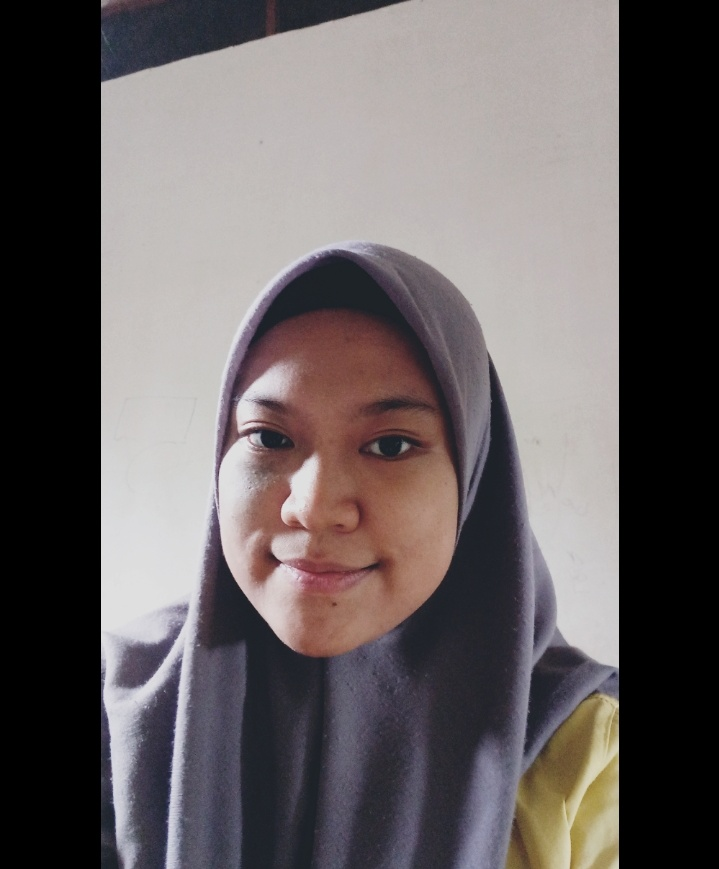

SEKOLAH DASAR

Program belajar di sekolah dasar Negeri 056619 mengedepankaan sikap, pengetahuan dan keterampilan. Saat bersikap hal yang diintegrasikan yaitu sikap spiritual yang diimplementasikan melalui ketaatan beribadah dan bertoleransi, perilaku bersyukur kepada Tuhan yang maha esa, kepada setiap insan dan mahluk hidup disekitarnya.Mengimplementasikan sikap sosial dengan menerapkan sikap jujur, disiplin, tangggung jawab, santun dan peduli serta rasa percaya diri. Memupuk pengetahuan dan keterampilan senantiasa didasari oleh minat bakat siswa dengan tujuan agar siswa bisa menjadi bintang dibidangnya masing- masing.
Program Pembelajaran Sekolah Dasar Negeri 056619 KW.Besar
KEPSEK
Kepala Sekolah SD
Dewani,S.Pd, S.Kom.